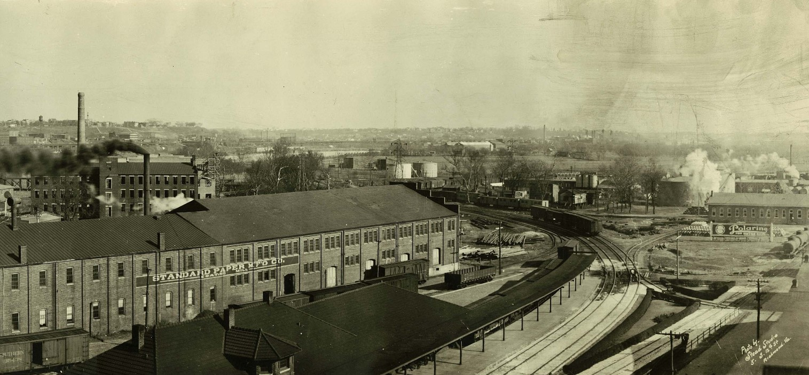

An independent entity for more than 250 years, Manchester agreed to merge with the capital in 1910, making the James River the official focal point of Richmond.

Manchester in 1915.
Modern Views of Manchester
Manchester's views of the city skyline are unmatched and the T. Tyler Potterfield Memorial Bridge is a convenient pedestrian thoroughfare linking the neighborhood to Brown's Island & downtown Richmond.